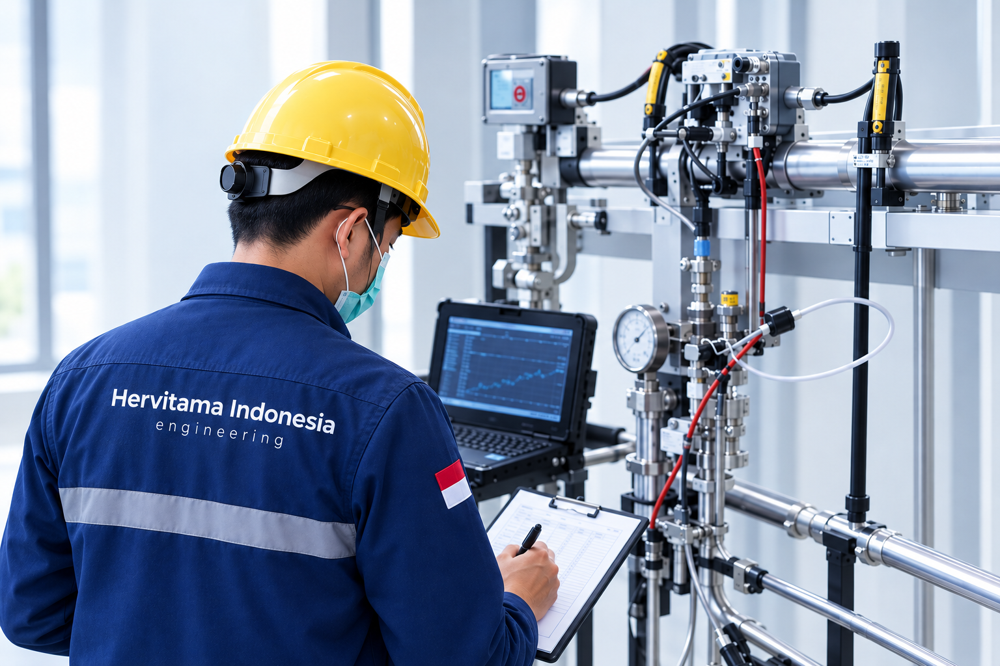
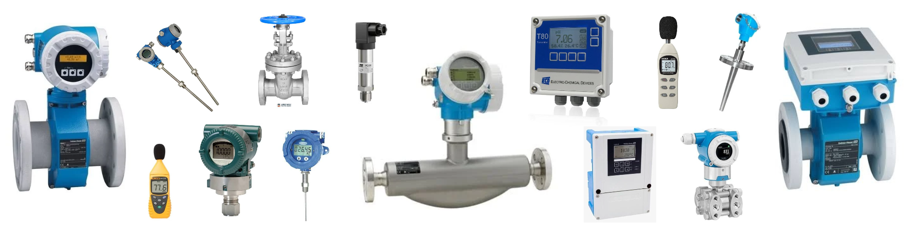

What is KAN?
KAN, the National Accreditation Committee, is Indonesia's national accreditation body. It assesses whether laboratories are technically competent and work to ISO/IEC 17025.

Reliable calibration services designed to ensure measurement accuracy, maintain instrument performance, and support confidence in every process.


KAN-accredited calibration for reliable, accurate measurements.
Reliable calibration to maintain measurement accuracy and performance.

KAN, the National Accreditation Committee, is Indonesia's national accreditation body. It assesses whether laboratories are technically competent and work to ISO/IEC 17025.
An accredited laboratory is independently assessed for competence, impartiality, and consistent results. Ours is accredited under number LK-359-IDN.
Independently assessed competence, so your measurements stand up to scrutiny.
Calibration records from an accredited laboratory support your audits and compliance.
Based on ISO/IEC 17025, the standard for testing and calibration laboratories.
KAN, the National Accreditation Committee, is Indonesia's national accreditation body. It assesses whether laboratories are technically competent and work to ISO/IEC 17025.
An accredited laboratory is independently assessed for competence, impartiality, and consistent results. Ours is accredited under number LK-359-IDN.
Independently assessed competence, so your measurements stand up to scrutiny.
Calibration records from an accredited laboratory support your audits and compliance.
Based on ISO/IEC 17025, the standard for testing and calibration laboratories.